Gummy - Fish Index
Back to Gummy the Fisherman · How a fish is picked: Game Mechanics
There are 16 fish to discover. The Fish Index in the game shows each fish you've caught, how many times, and your best weight, with a tab per character. The rarity column is used only in Test and Phone; in Production every fish counts the same.
| Fish | Rarity (Test/Phone) | Weight range | |
|---|---|---|---|
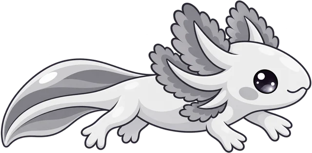 |
Pebble Axolotl | Common | 0.05–0.25 kg |
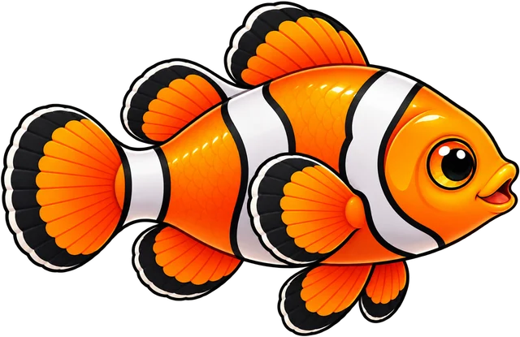 |
Chubby Clownfish | Common | 0.05–0.25 kg |
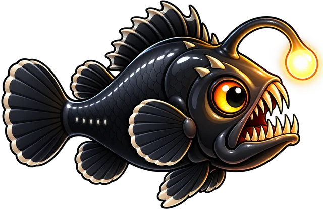 |
Lantern Angler | Common | 0.5–3 kg |
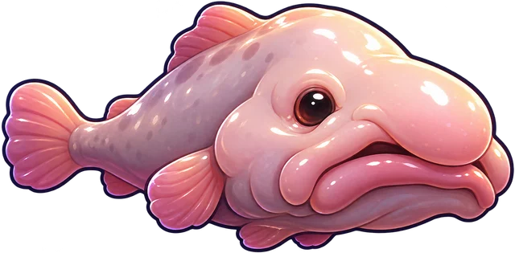 |
Grumpy Blobfish | Common | 1–4 kg |
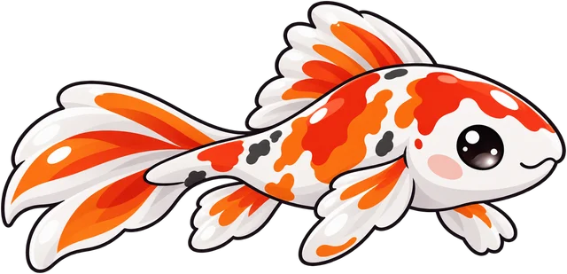 |
Sunset Koi | Rare | 1–6 kg |
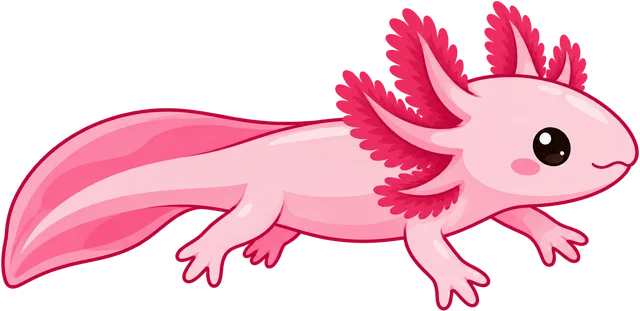 |
Bubblegum Axolotl | Rare | 0.08–0.3 kg |
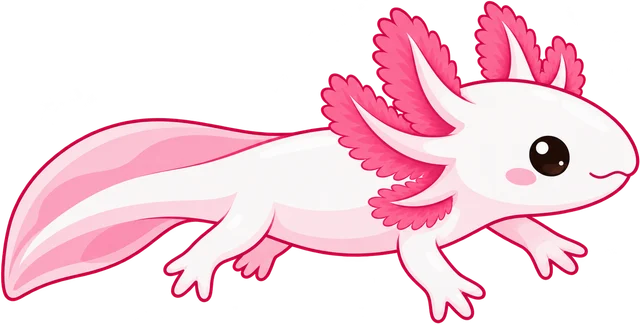 |
Blossom Axolotl | Rare | 0.08–0.3 kg |
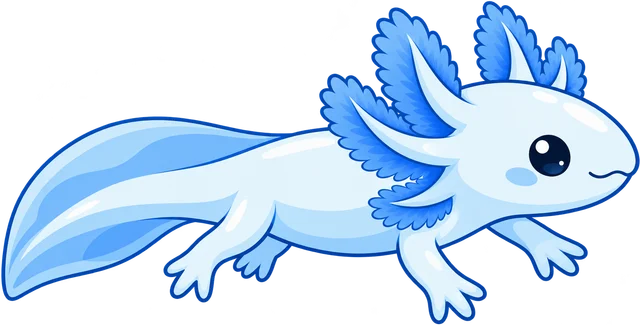 |
Moonglow Axolotl | Rare | 0.1–0.35 kg |
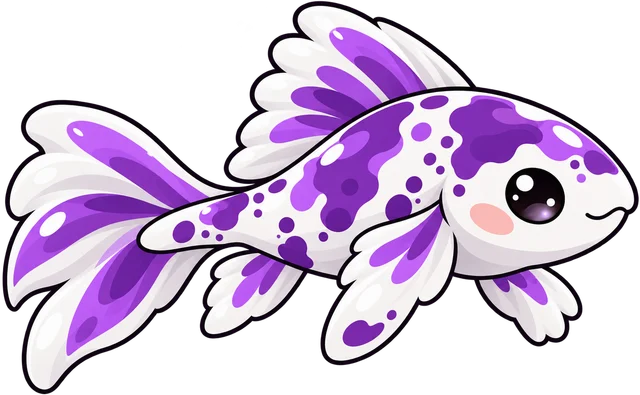 |
Grape Splash Koi | Epic | 2–9 kg |
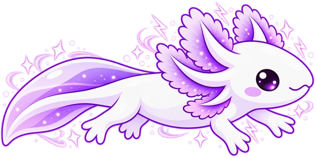 |
Violet Spark Axolotl | Epic | 0.2–0.6 kg |
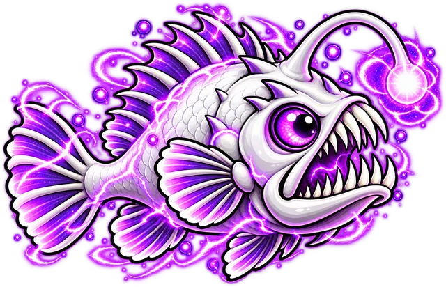 |
Phantom Angler | Epic | 2–8 kg |
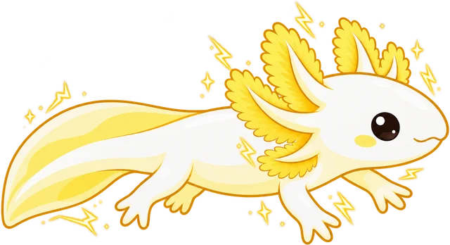 |
Golden Thunder Axolotl | Legendary | 0.4–1.2 kg |
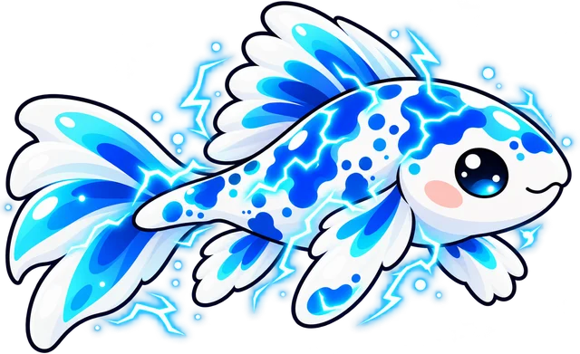 |
Storm Koi | Legendary | 3–12 kg |
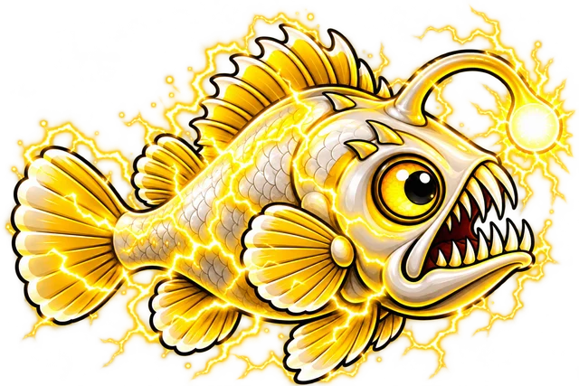 |
Thunderbolt Angler | Legendary | 5–15 kg |
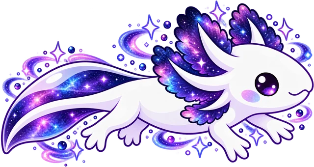 |
Galaxy Axolotl | Mythical | 1–3 kg |
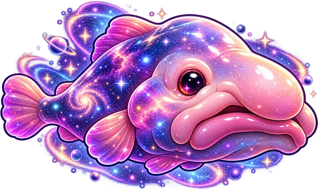 |
Cosmic Blobfish | Mythical | 4–10 kg |
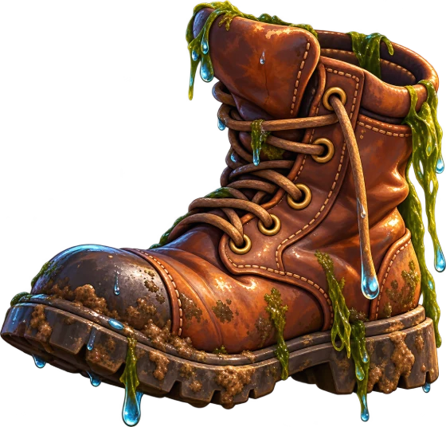 |
Old Boot | junk: caught only when every answer is wrong | 0.10 kg |
The weight range sets the fish's size for its price (the lightest is ×1, the heaviest ×1.5). The actual weight comes from the answers.
Rarity odds (Test and Phone)
Common 60 % · Rare 25 % · Epic 10 % · Legendary 4 % · Mythical 1 %. Those versions also have a Tackle shop: - Rods: Bamboo (free), Carbon ($1,500), Golden ($8,000), Cosmic ($40,000). Each better rod makes Epic, Legendary and Mythical fish bite more often. - Baits: Shiny Spinner ($300, no Common fish next game), Golden Worm ($1,200, Legendary ×3), Star Bait ($4,000, Mythical ×4)
Raw fish art (including unused fish such as Bluegill, Carp and Goldfish) is in Foxino/Gummy the Fisherman/Fishes.